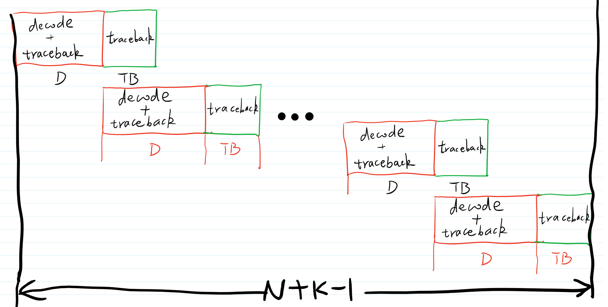

有限回溯长度的Viterbi译码器
1 引言
在《卷积编码和Viterbi译码》 一文的最后一节，有两个问题，其中一个问：当卷积编码器的码块输入变得越来越长时，译码回溯长度也增大，为保存幸存路径所需要的内存随着回溯长度呈指数增长，怎么办？ 一个有效的解决办法是：限制回溯长度。实验证明，当Viterbi译码器的回溯长度为编码器约束长度的5倍时就不会带来性能的损失。本文对此做简单的验证分析。
本文的编码器与《卷积编码和Viterbi译码》 一文中的编码器保持一致：约束长度为3，生成多项式为 \([7,5]_{8}\) ，码率为 \(1/2\)。编码结束时，本文依然对编码器做清零操作（上了厕所要记得冲，:), flushing the encoer）。对于带自动冲洗功能的卷积编码器，倘若输入二进制比特序列长度为 \(N\)，约束长度为 \(K\)，码率为 \(1/2\)则编码输出长度为 \(2N+ 2(K-1)\)，其中 \(2(K-1)\)个编码比特就是冲洗编码器产生的额外输出。
2 Viterbi译码过程回顾
在介绍有限回溯长度的Viterbi译码器之前，我们先简要回顾Viterbi译码过程，分四步：
- 在接收端，一次输入两个接收比特给译码器。这两个比特可能是星座图判决的硬输出（硬比特），也可能是星座图判决的软输出（软比特）。针对这两个接收比特，计算汉明距离（应比特）或者欧式距离（软比特）。
- 对于篱笆图中的四个状态，计算路径度量（path metric）。在计算这四个状态的路径度量时，每一个状态都有两个父状态（即，可以从两个状态到达当前状态）。对于每一个可能条状态跳转，计算其路径度量，加上之前的路径度量，得到当前路径的度量。然后，选择一条较小路径度量的路径作为幸存路径。这就是Viterbi译码过程中的加比选过程。
- 保存当前状态幸存路径上的前一个状态。
- 当处理\(2N+ 2(K-1)\)个比特之后，我们知道卷积编码器的状态是00（这就是在编码的时候对编码器进行清零的好处）。我们就从00状态开始回溯。我们在第2步和第3步已经保存了所有幸存路径的前后状态。根据前后状态的改变，我们很容易就得到输入比特。这些输入比特就是Viterbi译码输出。
在进行第4步时，我们需要 \(2^{K-1}\times (N+k-1)\)个内存单元保存幸存状态矩阵。 当 \(N\)变得很大时 ，需要大量的内存，实在不符合低复杂度接收机的原则。有没有办法降低Viterbi译码器对内存的需求，同时保证译码器性能不降低？答案是：有。
3 有限回溯长度的Viterbi译码器
通常，我把有限回溯长度的Viterbi译码器叫做“两步一回头”译码器。两步的大小分别是译码长度和纯粹回溯长度，一回头是指走完两步后就回溯译码。现在，你可能还不是很明白到底什么是“两步一回头”。看图1

图 1: “两步一回头”有限回溯长度的Viterbi译码器
在图1中，总长为 \(N+K-1\)长的篱笆图倍分成多段，每段长度为 \(D+TB\), 在译码过程中，每处理 \(2*(D+TB)\) 长度的接收比特(对应长度为 \(D+TB\) 的信息比特，记住我们的卷积编码码率为1/2.) 回溯 \(TB\)长度，然后开始译码，译码长度为 \(D\)。依次类推，直到译出长度为 \(N+K-1\)的信息序列。整个过程可以总结为：
- 在 \(D+TB\) 时刻，开始回溯。在当前的幸存路径上回溯 \(TB\)次之后，开始译码，译码长度为 \(D\)。
- 在 \(2D+TB\) 时刻，再次开始回溯。在当前的幸存路径上回溯 \(TB\)次之后，开始译码，译码长度为 \(D\)。
- 依次类推，直到 \(N+K-1\)，我们知道篱笆图的最终状态为00，再次回溯译码。
注意在每\(D+TB\) 的幸存路径加比选过程中，都执行Viterbi算法。在图1所示的译码算法过程中，只需要 \(D+2TB\)内存。另外，回溯过程中，初始状态的选择也很关键，通常有两种选择：
- 总是从一个固定状态回溯（比如固定从00状态）。
- 从最小度量的状态开始。
实验表明，无论从那种状态回溯，当回溯长度大于5倍的约束长度时，性能无差别。对于本文的译码器，回溯长度为15已经看不出有什么区别。